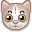

Sphynx
| Sphynx | |
|---|---|
|
|
|
| Nome original | Sphynx |
| Outros nomes | Gato pelado canadense |
| País de Origem | |
| Normas da raça | CFA: link TICA: link ACFA: link |
Sphynx, gato pelado canadense ou gato-esfinge (também comummente, mas erroneamente, chamado de gato-egípcio), é uma raça de gatos originária do Canadá, e que é conhecida por não ter pelos. Inclusivamente foi esta raça que inspirou o personagem Beerus (em português: Bills) do animangá Dragon Ball.
Origem e história da raça
No ano de 1966, em Ontário no Canadá, em uma ninhada de gatos, nasceu um filhote totalmente sem pelo. Na ninhada seguinte da mesma gata, o fenômeno voltou a acontecer. Gatos sem pelo foram utilizados em cruzamentos e deram origem a uma nova raça felina, cujos exemplares começaram a ser chamados "Moon's Cats" (Gatos da Lua), e em seguida de "Canadian naked" (Canadense nu) e finalmente com o nome que têm atualmente, Sphynx.
Criadores em todo o mundo começam a dedicar-se à nova raça para tentar fixar as caraterísticas, incluíndo com cruzamentos sucessivos com outras raças, principalmente com Devon-Rex, Cornish-Rex e Americano de pelo curto (American Shorthair). Os cruzamentos com Devon-Rex foram entretanto abandonados devido a uma doença genética mortal chamada Síndrome Miastênica Congênita (CMS) ou "Spasticity". Em 1970, a Cat Fanciers' Association (CFA) concedeu um estatuto provisório de raça ao Canadense nu mas, no ano seguinte o estatuto foi retirado devido a problemas de saúde e dificuldades na criação. Nessa altura acreditava-se que o gene associado à falta de pelo era letal, no entanto essa linha de sphynx acabou por desaparecer. O Sphynx como o conhecemos hoje, nasceu em 1975, quando o casal de agricultores Milt e Ethelyn Pearson descobriram um gato sem pelo em uma ninhada de Jezabelle, a sua gata, que tinha um "casaco" normal. Este gatinho, interessantemente chamado Epidermis juntou-se a outro gato sem pelagem chamado Dermis. Os dois foram vendidos a uma criadora do Oregon, denominada Kim Mueske, que os usou para fazer nascer a nova raça Sphynx. No Minnesota, Georgina Gattenby também trabalhou a linha dos Pearson, usando gatos vermelhos para fortalecer a junção de genes. Esta linha mostrou-se ser muito salubre. O nome sphynx (esfinge) foi escolhido pela semelhança com a Grande Esfinge de Gizé, Egito. Em 1978, a criadora canadense Shirley Smith ficou com um gato sem pelagem chamado de Bambi, que neutralizou e manteve como animal de estimação. A mãe de Bambi deu à luz mais uma dupla de gatos sem pelo que foram enviados, em 1983, para um holandês. O doutor Hernandez criou um casal de gatinhos, Punkie e Paloma, e juntou-os a um Devon Rex. A sua descendência, em conjunto com os descendentes dos gatos do casal Pearson, foram a criação da raça sphynx. Os criadores todavia descobriram que, embora o gene sem pelo fosse recessivo com o gene do pelo curto, mostrava-se dominante perante o gene do pelo dos Devon Rex, o que fez aumentar o número de membros da nova raça. Em fevereiro de 1998, o registo do sphynx foi aceito pela CFA. O que abrangeu a evolução da raça felina. Em 2000, cento e vinte sphynx estavam inscritos na associação, o que lhe garantia o trigésimo terceiro lugar em 40 raças reconhecidas.
Saúde
Embora à partida pareça delicado ou frágil, o gato Sphynx é um gato robusto e forte. Para que se mantenha em um estado ótimo deverá levá-lo com a regularidade adequada ao veterinário para confirmar que se encontra bem e que o desparasitem quando for necessário. As vacinas são uma parte muito importante da sua saúde, não se descuide deste aspecto.
Alimentação
A falta de pelo nas raças sem pelo predispõe a maior perda de calor pela superfície corporal, o que origina maior necessidade energética na dieta para gerar calor. Assim, é necessário fornecer dietas ricas em proteína e calorias que possam ser convertidas em calor, existindo formulações especiais para gatos sem pelo.
Referências
- «gato-esfinge - Dicionário da Língua Portuguesa». Academia das Ciências de Lisboa. Consultado em 29 de julho de 2025
- «gato-egípcio - Dicionário da Língua Portuguesa». Academia das Ciências de Lisboa. Consultado em 29 de julho de 2025
- «Sphynx». Fofuxo.com. Consultado em 18 de agosto de 2021
- admin (27 de maio de 2016). «Sphynx». Portal São Francisco. Consultado em 18 de agosto de 2021
- «Dragon Ball: Você consegue adivinhar o que inspirou a criação de Beerus?». IGN
- «Sphynx – The Cat Fanciers' Association, Inc». cfa.org. Consultado em 11 de novembro de 2020
- «Gato Sphynx: Saiba Tudo Sobre a Raça». Blog AZ
- «How to Take Care of Your Sphynx Cat». The Spruce Pets
- «Gato Sphynx: o exótico e leal "deus egípcio"». Nuxcell
- «Sphynx and Devon Rex Congenital Myasthenic Syndrome». Veterinary Genetics Laboratory
- «Sphynx». Efeca de Patos
- «Sphynx Principal». Gatil Cerberuss
- «Sphynx: características e fotos - PeritoAnimal». peritoanimal.com.br Consultado em 9 de janeiro de 2017
- «Gatos sem pelo - O Meu Animal». O Meu Animal.19 de agosto de 2016
Ligações Externas
 Este artigo sobre gatos é um esboço. Você pode ajudar a Wikipédia expandindo-o.